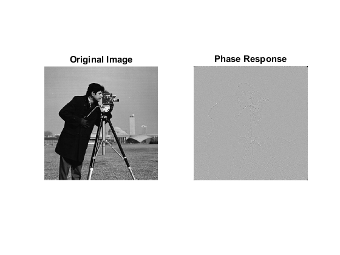

Contents
IVP Assignment 2
Creating a new environment.
clc;
clear all;
close all;
Functions Created for the Assignment: add_padding
function [img] = add_padding(image, filter_dim, value)
img = image;
[~, cols] = size(image);
n = uint8(floor(filter_dim/2));
horizontal_padding = zeros(n, cols) + value;
img = [horizontal_padding; img; horizontal_padding];
[row, ~] = size(img);
vertical_padding = zeros(row, n) + value;
img = [vertical_padding img vertical_padding];
Functions Created for the Assignment: log_filter
function [log] = log_filter(filter_dim, sigma)
log = double(zeros(filter_dim, filter_dim));
n = double(ceil(filter_dim/2));
for i=1:filter_dim
for j=1:filter_dim
x = double(i-n);
y = double(j-n);
log(i,j) = double((x^2+y^2-sigma^2)*...
exp(-(x^2 + y^2)/(2*sigma^2))/sigma^4);
end
end
log = log - mean(mean(log));
Functions Created for the Assignment: correlation
function [img] = correlation(image, filter)
[f_row, f_col] = size(filter);
[i_row, i_col] = size(image);
image = double(image);
img=double(zeros(i_row-f_row+1, i_col-f_col+1));
for i=1:(i_row-f_row+1)
for j=1:(i_col-f_col+1)
img(i,j) = sum(sum(image(i:i+f_row-1,j:j+f_col-1).*filter));
end
end
Functions Created for the Assignment: zero_crossing_enhanced_image
function [img] = zero_crossing_enhanced_image(image, thresh)
[row, col] = size(image);
image = add_padding(image, 3, 0);
vert_filter = zeros(3,3);
vert_filter(1,2) = 1;
vert_filter(3,2) = 1;
horz_filter = zeros(3,3);
horz_filter(2,1) = 1;
horz_filter(2,3) = 1;
pos_45_deg_filter = zeros(3,3);
pos_45_deg_filter(3,1) = 1;
pos_45_deg_filter(1,3) = 1;
neg_45_deg_filter = zeros(3,3);
neg_45_deg_filter(1,1) = 1;
neg_45_deg_filter(3,3) = 1;
img = double(zeros(row, col));
for i=1:(row)
for j=1:(row)
v = image(i:i+2,j:j+2) .* vert_filter;
h = image(i:i+2,j:j+2) .* horz_filter;
pos_45 = image(i:i+2,j:j+2) .* pos_45_deg_filter;
neg_45 = image(i:i+2,j:j+2) .* neg_45_deg_filter;
check = 0;
if (v(1,2)*v(3,2)<-1 && abs(v(1,2)-v(3,2))>thresh)
check = 1;
elseif (h(2,1)*h(2,3)<-1 && abs(h(2,1)-v(2,3))>thresh)
check = 1;
elseif (pos_45(3,1)*pos_45(1,3)<-1 && abs(pos_45(3,1)-pos_45(1,3))>thresh)
check = 1;
elseif (neg_45(1,1)*neg_45(3,3)<-1 && abs(neg_45(3,1)-neg_45(1,3))>thresh)
check = 1;
end
if (check == 1)
img(i,j) = 255;
else
img(i,j) = 0;
end
end
end
Functions Created for the Assignment: gaussian_blur
function [gauss_blur] = gaussian_blur(filter_dim, sigma)
gauss_blur = double(zeros(filter_dim, filter_dim));
n = double(ceil(filter_dim/2));
for i=1:filter_dim
for j=1:filter_dim
x = double(i-n);
y = double(j-n);
gauss_blur(i,j) = exp(-(x^2 + y^2)/(2*sigma^2));
end
end
gauss_blur = gauss_blur - mean(mean(gauss_blur));
Functions Created for the Assignment: non_maxima_supression_with_thresh
function [img] = non_maxima_supression_with_thresh(image, grad_x, grad_y, thresh)
image = double(image);
mag = sqrt(grad_x.^2 + grad_y.^2);
angle = atan2(grad_y, grad_x) * 180/pi;
angle = angle + (angle>180)*(-180) + (angle<0)*(180);
[row, col] = size(image);
image = add_padding(image, 3, 0);
vert_filter = zeros(3,3);
vert_filter(1,2) = 1;
vert_filter(3,2) = 1;
horz_filter = zeros(3,3);
horz_filter(2,1) = 1;
horz_filter(2,3) = 1;
pos_45_deg_filter = zeros(3,3);
pos_45_deg_filter(3,1) = 1;
pos_45_deg_filter(1,3) = 1;
neg_45_deg_filter = zeros(3,3);
neg_45_deg_filter(1,1) = 1;
neg_45_deg_filter(3,3) = 1;
img = double(zeros(row, col));
for i=1:(row)
for j=1:(col)
v = image(i:i+2,j:j+2) .* vert_filter;
h = image(i:i+2,j:j+2) .* horz_filter;
pos_45 = image(i:i+2,j:j+2) .* pos_45_deg_filter;
neg_45 = image(i:i+2,j:j+2) .* neg_45_deg_filter;
ang = angle(i, j);
sector = 0;
if ((ang>0 && ang<22.5) || (ang>157.5 && ang<180))
sector = 1;
elseif (ang>22.5 && ang<67.5)
sector = 2;
elseif (ang>67.5 && ang<112.5)
sector = 3;
elseif (ang>112.5 && ang<157.5)
sector = 4;
end
value = 0;
switch sector
case 1
if (h(2,1)>mag(i,j) && h(2,3)>mag(i,j))
value = mag(i,j);
end
case 2
if (pos_45(3,1)>mag(i,j) && pos_45(1,3)>mag(i,j))
value = mag(i,j);
end
case 3
if (v(1,2)>mag(i,j) && v(3,2)>mag(i,j))
value = mag(i,j);
end
case 4
if (neg_45(1,1)>mag(i,j) && neg_45(1,1)>mag(i,j))
value = mag(i,j);
end
end
img(i,j)=value;
end
end
img = img.*(img>thresh);
Functions Created for the Assignment: grad_filter
function [grad_filt] = grad_filter(x_or_y)
grad_filt = double(zeros(3,3));
if (x_or_y == 'x')
grad_filt(2,1) = 1;
grad_filt(2,2) = -2;
grad_filt(2,3) = 1;
else
grad_filt(1,2) = 1;
grad_filt(2,2) = -2;
grad_filt(3,2) = 1;
end
Functions Created for the Assignment: inv_dft2d
function [inv_fft] = inv_dft2d(image)
image = double(image);
[M, N] = size(image);
m = -(M-1)/2:1:(M-1)/2;
n = -(N-1)/2:1:(N-1)/2;
exponential_x = m' * m;
exponential_x = exp(-2 * pi * 1i / M .* exponential_x);
exponential_y = n' * n;
exponential_y = exp(-2 * pi * 1i / N .* exponential_y);
inv_fft = inv(exponential_x) * image * inv(exponential_y);
Functions Created for the Assignment: log_transform
function [log_trans] = log_transform(image, c)
log_trans = double(image);
[~, dim] = size(size(image));
if dim == 2
[row, col] = size(image);
for i = 1:row
for j = 1:col
log_trans(i, j) = c * log( 1+ (log_trans(i, j)));
end
end
else
[row, col, channels] = size(image);
for i = 1:row
for j = 1:col
for k = 1: channels
log_trans(i, j, k) = c * log(1 + (log_trans(i, j, k)));
end
end
end
end
Functions Created for the Assignment: dft_2d
function [dft2d] = dft_2d(image)
image = double(image);
[M, N] = size(image);
m = -(M-1)/2:1:(M-1)/2;
n = -(N-1)/2:1:(N-1)/2;
exponential_x = m' * m;
exponential_x = exp(-2 * pi * 1i / M .* exponential_x);
exponential_y = n' * n;
exponential_y = exp(-2 * pi * 1i / N .* exponential_y);
dft2d = exponential_x * image * exponential_y;
Image Imports
cameraman = imread('C:\Chanakya\Projects\ivp-assignments\Assignment-1\images\cameraman.tif');
lena_color = imread('C:\Chanakya\Projects\ivp-assignments\Assignment-1\images\lena_color_256.tif');
Question 1: Use the Marr-Hilderith filter to obtain the edges of the image.
mh_image = add_padding(cameraman, 5, 0);
log_filt = log_filter(5, 1);
correlated_image = correlation(mh_image, log_filt);
mh_final_image_0 = zero_crossing_enhanced_image(correlated_image, 0);
mh_final_image_3 = zero_crossing_enhanced_image(correlated_image, 3);
mh_final_image_6 = zero_crossing_enhanced_image(correlated_image, 6);
mh_final_image_9 = zero_crossing_enhanced_image(correlated_image, 9);
figure('Name', 'Maar-Hilderith Edge Detection 1');
subplot(1,2,1);
imshow(cameraman);
title('Original Image');
subplot(1,2,2);
imshow(correlated_image);
title('Image Correlated with LOG Filter');
figure('Name', 'Maar-Hilderith Edge Detection 2');
subplot(1,2,1);
imshow(mh_final_image_0);
title('MH Filtered (Threshold=0)');
subplot(1,2,2);
imshow(mh_final_image_3);
title('MH Filtered (Threshold=3)');
figure('Name', 'Maar-Hilderith Edge Detection 3');
subplot(1,2,1);
imshow(mh_final_image_6);
title('MH Filtered (Threshold=6)');
subplot(1,2,2);
imshow(mh_final_image_9);
title('MH Filtered (Threshold=9)');
Question 2: Use the Canny Edge Detection Technique to obtain the edges of the image.
ce_image = add_padding(cameraman, 5, 0);
gaus_blur = gaussian_blur(5, 1);
gaussing_blurred_image = correlation(ce_image, gaus_blur);
g_x = grad_filter('x');
g_y = grad_filter('y');
gaussing_blurred_image_padded = add_padding(gaussing_blurred_image, 3, 0);
grad_x = correlation(gaussing_blurred_image_padded , g_x);
grad_y = correlation(gaussing_blurred_image_padded , g_y);
nms_1 = non_maxima_supression_with_thresh(gaussing_blurred_image, grad_x, grad_y, 0);
nms_2 = non_maxima_supression_with_thresh(gaussing_blurred_image, grad_x, grad_y, 2);
figure('Name', 'Canny Edge Detection 1');
subplot(1,2,1);
imshow(gaussing_blurred_image);
title('Image Corr with the Gaussian Blur');
subplot(1,2,2);
imshow(grad_x);
title('Grad of the Gauss Blur in X');
figure('Name', 'Canny Edge Detection 2');
subplot(1,2,1);
imshow(grad_y);
title('Grad of the Gauss Blur in Y');
subplot(1,2,2);
imshow(nms_1);
title('Nonmax Supress (Thresh=0.1)');
figure('Name', 'Canny Edge Detection 3');
subplot(1,2,1);
imshow(abs(nms_2));
title('Nonmax Supress (Thresh=2)');
subplot(1,2,2);
imshow(abs(nms_2-nms_1));
title('Diff of the Nonmax Suppressions');
Question 3: Phase only reconstruction of the image from the Fourier Domain.
dft2d = dft_2d(cameraman);
mag = abs(dft2d);
phase = atan2(imag(dft2d), real(dft2d));
phase_response = exp(1i*phase);
figure('Name', '2D DFT Reconstruction Phase Response');
subplot(1,2,1);
imshow(cameraman);
title('Original Image');
subplot(1,2,2);
imshow((im2uint8(mat2gray(real(inv_dft2d(phase_response)))))*3);
title('Phase Response');
Question 4: Phase only reconstruction of the image from the Fourier Domain.
figure('Name', 'Computing the 2D-DFT of the image.');
subplot(1,3,1);
imshow(cameraman);
title('Original Image');
subplot(1,3,2);
imshow(uint8(abs(dft2d)));
title('2D DFT');
subplot(1,3,3)
imshow(uint8(log_transform(abs(dft2d), 10)));
title('2D DFT with Log Transform');
